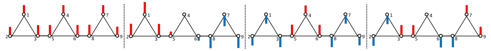
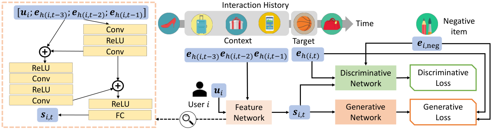

Initialization Matters: Regularizing Manifold-informed Initialization for Neural Recommendation Systems (初始化至关重要：面向神经推荐系统的流形感知正则化初始化)
- 会议/期刊: KDD 2021 (27th ACM SIGKDD)
- 作者与机构: Yinan Zhang, Boyang Li, Yong Liu, Hao Wang, Chunyan Miao（南洋理工大学 / 阿里巴巴-南洋理工联合研究院 / 阿里巴巴集团）
- 推荐链路定位: 召回（Embedding 初始化层，正交于任意召回/排序骨干）
- 研究方向: 协同过滤与双塔召回 / 序列与会话推荐
- 论文原文: https://arxiv.org/abs/2106.04993v2
- 开源代码: 暂未开源（校验链接指向基线 NetMF 仓库，非本文实现）
TL;DR (1分钟核心速览)
本文针对"随机初始化使神经推荐系统甚至打不过 KNN"这一痛点，提出 LEPORID 初始化：在用户/物品 KNN 图上用拉普拉斯特征映射（LE）注入多尺度流形邻域信息，并按节点度数做自适应岭正则以压制长尾高方差；再配一个残差卷积特征网络 + 判别/生成双损失的 DLR2 模型。在 ML-1M / Steam / Anime 三数据集、时间切分 + 全库未交互候选排序协议下，DLR2+LEPORID 在 ML-1M 的 F1@10 上相对最强神经基线（HGN+LEPORID）提升 45.3%、相对最强传统基线（UserKNN）提升 52.4%。
Background & Motivation (背景与核心矛盾)
- 主流范式: 推荐主流做法是随机初始化 user/item embedding（Gaussian \(\mathcal{N}(0,0.01^2)\)），或用 BPR/SVD/NetMF/node2vec/Graph-Bert 预训练后再微调；骨干网络从 NCF、NGCF/DGCF 到 HGN 等序列模型。
- 前人局限: ① 文献 [8] 指出调优良好的 UserKNN/ItemKNN 常反超复杂神经模型，说明神经模型未利用数据流形上的邻域结构；② 理论结果（收敛点靠近初始化点）意味着随机初始化的网络很难自行"长"出邻域几何；③ 而基于预训练的初始化要么依赖 side information（用户画像、视觉特征），要么训练代价高、收敛难调。
- 核心洞察 (Key Insight): 图 1 显示 LE 的前若干维天然把图按由粗到细的粒度切分（第 2 维分两簇、第 3 维分三簇），即 LE 本身就是多尺度邻域编码器；但图 2 进一步揭示 KNN 图的边是由不等量数据估计出来的——低度节点增加一条边，其 LE embedding 的 \(\ell_2\) 变化远大于高度节点，说明尾部节点 embedding 方差高、不可靠。
- 本文切入点: 保留 LE 的流形结构优势，用与 \((d_{\max}-d_i)\) 成正比的岭项给孤立节点做"自适应方差缩减"，得到 LEPORID。

Method (核心方法设计)
1. 整体框架 (Overall Architecture)
LEPORID 是一个离线、与模型无关的初始化步骤：先用交互集合的 Jaccard 相似度分别构建用户图与物品图（互为 top-\(K\)邻居才连边，权重为 Jaccard 值），在该图上求解带流行度正则的归一化拉普拉斯特征分解，取最小\(D\)个特征向量组成\(\tilde{Q}\in\mathbb{R}^{N\times D}\)作为初始 embedding；随后把 embedding 交给下游任意神经推荐器联合训练。DLR2 是该初始化的"最佳搭档"：输入\([\,\boldsymbol{u}_i;\boldsymbol{e}_{h(i,t-3)};\boldsymbol{e}_{h(i,t-2)};\boldsymbol{e}_{h(i,t-1)}\,]\)经两层残差卷积块得到状态\(\boldsymbol{s}_{i,t}\)，再分叉到判别分支\(\mathcal{S}\)与生成分支\(\mathcal{G}\) 做联合打分/回归。
flowchart TD
A["用户-物品交互矩阵"] --> B["Jaccard KNN 图 (用户图/物品图)"]
B --> C["LEPORID: 正则化 Laplacian 特征分解"]
C --> D["初始 embedding u_i, e_j"]
D --> E["DLR2 残差卷积特征网络 s_i,t"]
E --> F["判别分支 S(s,e) + 生成分支 G(s)"]
F --> G["双损失联合训练 / Top-N 检索"]
2. 关键设计拆解 (Key Designs)
- LEPORID：把"数据不足"写进目标函数。原 LE 只最小化 \(\tfrac12\sum_{i,j}W_{ij}(q_i-q_j)^2\)，当\(d_i\)很小时几乎所有\(W_{ij}\approx 0\)，\(q_i\)几乎不受约束、方差极大。LEPORID 增加\(\alpha\sum_i (d_{\max}-d_i)q_i^2\)，矩阵形式为\(\boldsymbol{q}^{(k)}=\arg\min_{\boldsymbol{q}}\boldsymbol{q}^{\top}\big((1-\alpha)D-W+\alpha d_{\max}I\big)\boldsymbol{q}\)，即\(L_{\text{reg}}\)。由于\(d_{\max}\ge d_i\)保证半正定，仍可用特征分解求解；概率视角上等价于给\(q_i\) 加一个方差随度数自适应的高斯先验，度数越低收缩越强。
- DLR2 的残差特征网络：让初始化信息"活着"穿过网络。作者引用残差网络输出在特定条件下可逆（含输入全部信息）的结论，用两层 Conv+ReLU 残差块而非纯 MLP，使 LE 携带的流形几何不被多层非线性快速冲刷掉；消融显示"无卷积"与"无残差"都显著掉点，而强可逆的 RevNet 与 DLR2 表现相当，佐证"可逆性利于利用好初始化"的假设。
- 判别 + 生成双损失的互补监督与推理开销。判别分支输出距离，用 square-square loss \(\mathcal{L}_{S}=\mathbb{E}\big[\mathcal{S}(\boldsymbol{s},\boldsymbol{e}_{pos})^2+(\max(m_S-\mathcal{S}(\boldsymbol{s},\boldsymbol{e}_{neg}),0))^2\big]\)；生成分支直接回归目标 embedding，用 hinge loss\(\mathcal{L}_{G}=\mathbb{E}\big[\max(\lVert G(\boldsymbol{s})-\boldsymbol{e}_{pos}\rVert_2-\lVert G(\boldsymbol{s})-\boldsymbol{e}_{neg}\rVert_2+m_G,0)\big]\)；总损失\(\mathcal{L}=\mathcal{L}_{S}+\mathcal{L}_{G}\)。负样本为均匀随机采样（每正样本 1 个负样本，无难负样本挖掘、无 in-batch 共享）；在线推理可用生成分支直接出向量做 ANN 检索，或用判别分支对候选打分。初始化开销方面，利用 KNN 图稀疏性（稀疏度\(>1-2K^2/N^2\)），用 Implicit Restarted Lanczos 求解前\(D\)个特征向量，复杂度\(O(K^2D\kappa)\)与\(N\)无关：Anime 的\(47143\times47143\) 用户图求 64 维特征向量仅需 172 秒，而 BPR 收敛需 1888 秒。
Experimental Setup & Evaluation Protocol (实验设置与评估协议)
- 数据集与预处理: 仅保留交互数 \(\ge 20\) 的用户与物品（类似 20-core 过滤），并统计尾部 25% 用户/物品的交互占比：
| 数据集 | #Users | #Items | #Interactions | 稀疏度/密度 | 特征/场景说明 |
|---|---|---|---|---|---|
| ML-1M | 6,040 | 3,650 | 1,000,127 | 密度 4.54% | 电影评分，尾部用户交互占 4.51%、尾部物品仅 1.08% |
| Steam | 33,699 | 6,253 | 1,470,329 | 密度 0.70% | 游戏平台，最稀疏；尾部用户交互占 11.67% |
| Anime | 47,143 | 6,535 | 6,143,751 | 密度 1.99% | 动漫社区，规模最大；尾部物品仅 0.93% |
- 数据划分与防穿越 (Splitting Strategy): 全局时间戳切分——每个用户前 70% 交互训练、次 10% 验证、末 20% 测试；测试时从候选集中剔除训练集与验证集中已交互物品。
- 排名评测协议 (Ranking Protocol): 近似 Full-Ranking（对"未在训练/验证中出现过的全部物品"排序，非采样负例），指标为 HR@5/10 与 F1@5/10（F1 为 precision-recall 调和平均，作者称其比 accuracy 更能反映错分）。
- 对比基线与超参设置: 传统侧 TopPop、UserKNN、ItemKNN、SLIM、BPR；神经侧 NCF、NGCF、DGCF、HGN，加上本文 DLR2；初始化侧对比 Random / SVD / BPR / NetMF / node2vec / Graph-Bert（无 side info）/ LE。embedding 维度 \(D\)与各基线超参见原文附录；正则系数\(\alpha=0.7\)最优，邻居数\(K\) 敏感性低；未报告显著性检验。
Key Experimental Results (实验关键数据)
1. 主实验对比 (Main Results)
| 方法 | 初始化 | ML-1M HR@10 | ML-1M F1@10 | Steam HR@10 | Steam F1@10 | Anime HR@10 | Anime F1@10 |
|---|---|---|---|---|---|---|---|
| TopPop | – | 0.4377 | 0.0517 | 0.2306 | 0.0307 | 0.6103 | 0.0807 |
| UserKNN | – | 0.5419 | 0.0760 | 0.2575 | 0.0357 | 0.5899 | 0.0802 |
| ItemKNN | – | 0.5235 | 0.0682 | 0.2720 | 0.0385 | 0.7431 | 0.1204 |
| SLIM | – | 0.5253 | 0.0680 | 0.2588 | 0.0354 | 0.7132 | 0.1011 |
| BPR | random | 0.1581 | 0.0171 | 0.2348 | 0.0338 | 0.0800 | 0.0114 |
| NGCF | LEPORID | 0.5258 | 0.0667 | 0.2084 | 0.0277 | 0.6401 | 0.1014 |
| HGN | LEPORID | 0.5475 | 0.0797 | 0.2745 | 0.0380 | 0.6488 | 0.0902 |
| DLR2 | LE | 0.6730 | 0.1070 | 0.2878 | 0.0420 | 0.7438 | 0.1409 |
| DLR2 | LEPORID | 0.7026 | 0.1158 | 0.2994 | 0.0437 | 0.7654 | 0.1421 |
| Improv. | – | +29.4% | +45.3% | +8.8% | +13.7% | +3.0% | +18.0% |
（Improv. 为相对该数据集最强基线：ML-1M 对 HGN+LEPORID，Steam 对 ItemKNN，Anime 对 ItemKNN；若对最强传统基线 UserKNN，ML-1M F1@10 提升达 52.4%。）
2. 消融实验 (Ablation Study)
| 消融维度 | 变体 | HR@10 | F1@10 |
|---|---|---|---|
| 双损失 (ML-1M) | w/o \(\mathcal{L}_S\)（仅生成分支） | 0.4982 | 0.0601 |
| 双损失 (ML-1M) | w/o \(\mathcal{L}_G\)（仅判别分支） | 0.6826 | 0.1112 |
| 双损失 (ML-1M) | Full (\(\mathcal{L}_S+\mathcal{L}_G\)) | 0.7026 | 0.1158 |
| 初始化 (ML-1M, DLR2) | Random | 0.4538 | 0.0497 |
| 初始化 (ML-1M, DLR2) | SVD | 0.5820 | 0.0775 |
| 初始化 (ML-1M, DLR2) | BPR | 0.6273 | 0.0979 |
| 初始化 (ML-1M, DLR2) | node2vec | 0.6603 | 0.1011 |
| 初始化 (ML-1M, DLR2) | LE | 0.6730 | 0.1070 |
| 初始化 (ML-1M, DLR2) | LEPORID | 0.7026 | 0.1158 |
| 尾部用户子集 (DLR2) | ML-1M HR@5 / F1@10 | Steam HR@5 / F1@10 | Anime HR@5 / F1@10 |
|---|---|---|---|
| Random | 0.1490 / 0.0382 | 0.0817 / 0.0212 | 0.3209 / 0.0732 |
| SVD | 0.2623 / 0.0722 | 0.0704 / 0.0155 | 0.2989 / 0.0765 |
| LE | 0.3192 / 0.0880 | 0.0973 / 0.0258 | 0.3617 / 0.0955 |
| LEPORID | 0.3536 / 0.1045 | 0.1240 / 0.0321 | 0.3953 / 0.1195 |
| 相对 LE 提升 | +10.8% / +18.7% | +27.4% / +24.4% | +9.3% / +25.1% |
3. 关键实验发现 (Key Findings)
- 初始化是神经推荐的第一性变量，而非骨干架构：NCF 在 ML-1M 上 F1@10 从随机初始化的 0.0044 跃升至 LEPORID 的 0.0561（超 10 倍），且在 ML-1M/Steam 上 LEPORID 初始化的普通神经模型即可反超调优 KNN，直接反驳"神经推荐不如 KNN"的结论。
- LEPORID 对已用图信息的模型依然互补：NGCF 在 Anime 的 F1@10 相对其最佳基线（SVD 初始化）提升 67.02%，DGCF 提升 31.50%，说明空间消息传递与谱域流形初始化捕捉的是不同信号。
- 正则项精确命中长尾：在交互最少 25% 用户上，LEPORID 相对 LE 的提升（Steam HR@5 +27.4%、Anime F1@10 +25.1%）明显大于全集提升幅度，验证"\((d_{\max}-d_i)\) 加权收缩"确实在做方差缩减；同时双损失协同也高度非对称——给仅生成分支补上判别损失可涨 F1@10 68.41%，反方向只涨 4.19%。
Highlights & Limitations (亮点、对比与审稿批判)
- 与代表作对比 (vs. Prior Work): 相比 DelfCF/[8] 的"KNN 胜过神经模型"诊断，本文给出了可操作的解法而非仅报告现象；相比 NetMF/node2vec/Graph-Bert 等预训练初始化，LEPORID 不依赖 side information、有闭式收敛保证且复杂度与 \(N\) 解耦（172s vs 1888s）；相比 NGCF/DGCF 这类空间域图卷积，它作用在谱域且作为初始化与任意骨干正交组合。
- 可迁移亮点: ①"度数自适应岭正则"可无缝搬到 LightGCN 的邻接归一化、矩阵分解的隐向量先验、乃至冷启动 item embedding 收缩估计；②"用残差/可逆结构保住初始化信息"是低成本 trick，可加在任意深层序列模型底部。
- 审稿级局限批判: ① 序列骨干只对比了 HGN，缺少 SASRec/BERT4Rec 等更强序列基线，DLR2 的相对优势可能被架构代差解释；② 评测仅用 HR/F1，未报 NDCG@K，也未做显著性检验，且 KNN 图构建的 \(O(N^2)\)相似度搜索在千万级用户工业场景仍是瓶颈（需 ANN 近似）；③\(\alpha=0.7\) 为单数据集网格搜出的最优值，跨域稳健性存疑，正则强度与图稀疏度的耦合关系未做理论刻画。
Rating (四维评分)
- 方法创新性 (Novelty): ⭐⭐⭐⭐ （把"KNN 图边由不等量数据估计"这一统计事实转化为度数自适应岭正则，洞察清晰、推导干净，但本质仍是 LE + Tikhonov 正则的组合式创新）
- 评估协议与实验扎实度 (Protocol & Experiments): ⭐⭐⭐⭐ （三域数据集 + 时间切分 + 未交互全库排序 + 6 种初始化 × 5 种骨干的交叉矩阵实验很扎实，但缺显著性检验与 NDCG）
- 写作与数学规范度 (Clarity & Rigor): ⭐⭐⭐⭐⭐ （LE→LEPORID 的半正定性与概率先验双视角解释完整，复杂度与收敛性有明确交代，图 1/图 2 的动机可视化极有说服力）
- 工业落地与复现价值 (Industrial & Practical Value): ⭐⭐⭐⭐ （初始化与模型解耦、稀疏特征分解秒级完成，落地门槛低；但未开源，且大规模 KNN 构图需自行替换为 ANN 方案）